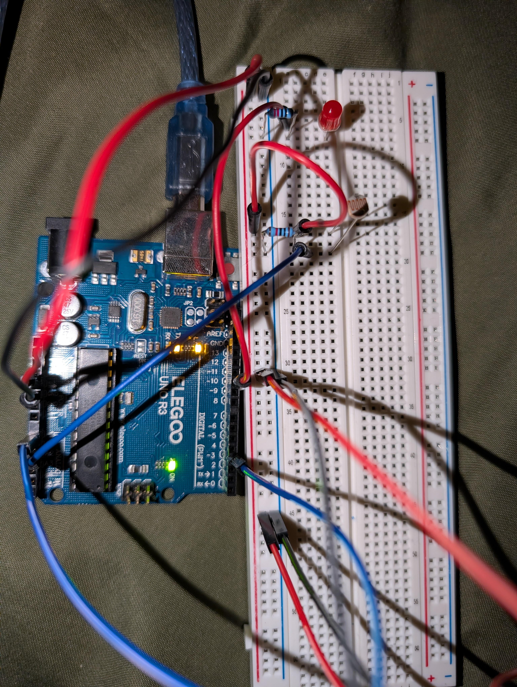
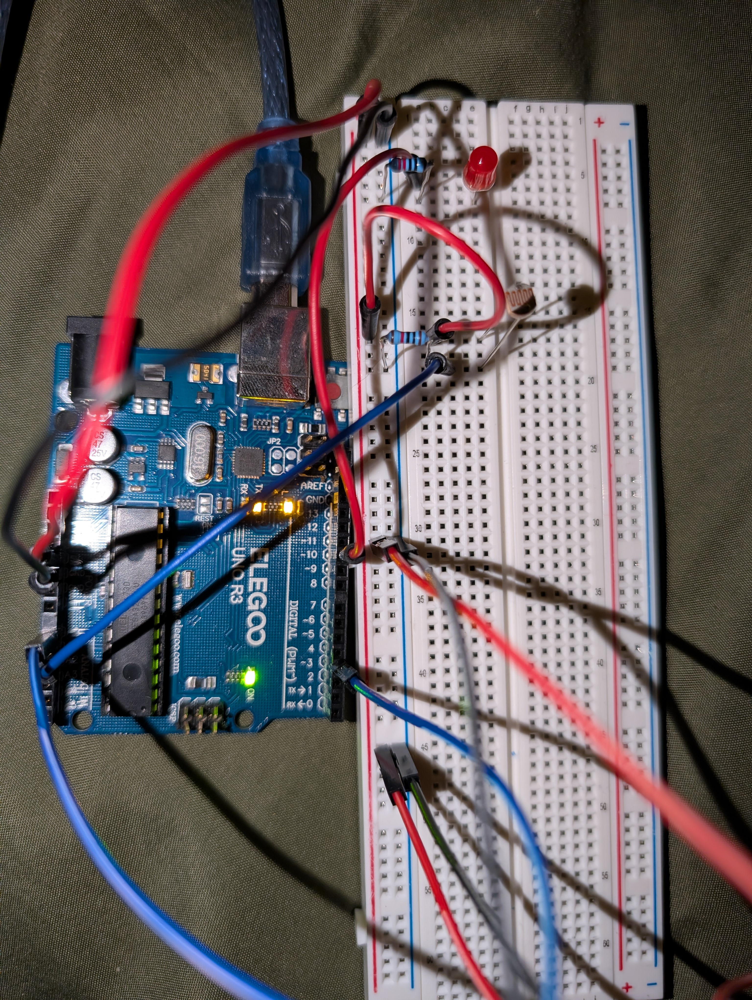

1,000 Ω < R1 < 100,000 Ω
5 V × (
5 V × (
// pin connected to motion detector
const int motionPin = 3;
// pin connected to light detector
const int lightPin = A2;
// pin connected to sound detector
const int soundPin = A0;
// pin connected to led
const int ledPin = 10;
// motion value
int motion;
// sound value
int sound;
// light value
int light;
// whether or not the led is on
bool ledOn = false;
// run once at the beginning
void setup() {
// match p5
Serial.begin(9600);
// set timeout to 0.01 ms
Serial.setTimeout(10);
// set motion sensor pin as input
pinMode(motionPin, INPUT);
// set light sensor pin as input
pinMode(lightPin, INPUT);
// set sound sensor pin as input
pinMode(soundPin, INPUT);
// set led pin as output
pinMode(ledPin, OUTPUT);
}
// repeat infinitely
void loop() {
// check if there is any serial data
if (Serial.available() > 0) {
// set the serial data as result
char result = Serial.read();
// check if the result is 1
if (result == '1') {
// set led brightness to 255
analogWrite(ledPin, 255);
// check if result is 0
} else if (result == '0') {
// set led brightness to 0
analogWrite(ledPin, 0);
}
}
// set motion value to 1 or 0
motion = digitalRead(motionPin);
// set sound value to size
sound = constrain(map(analogRead(soundPin), 400, 450, 100, 400), 0, 400);
// set light value to color value
light = constrain(map(analogRead(lightPin), 0, 1000, 0, 255), 0, 255);
// print motion value
Serial.print(motion);
// print ,
Serial.print(",");
// print sound value
Serial.print(sound);
// print ,
Serial.print(",");
// print light value
Serial.println(light);
// wait 0.1 s
delay(100);
}// match arduino
const BAUD_RATE = 9600;
// set variables
let port, connectBtn, ledButton;
// set ledOn to false (led is off)
let ledOn = false;
// run once at beginning
function setup() {
// set up the arduino
setupSerial();
// create a button
ledButton = createButton("Toggle LED");
// place the button
ledButton.position(windowWidth/2, 80);
// turn led on/off when clicked
ledButton.mouseClicked(toggle);
// create the canvas
createCanvas(windowWidth, windowHeight);
// set font
textFont("system-ui", 50);
// set syle
textStyle(BOLD);
// align text
textAlign(CENTER, CENTER);
}
// run infinitely
function draw() {
// determine if the arduino is connected
const portIsOpen = checkPort();
// if the port isn't open, restart function
if (!portIsOpen) return;
// get first chunk for motion
let motion = port.readUntil(",");
// if empty, restart function
if (motion.length == 0) return;
// get second chunk for sound
let sound = port.readUntil(",");
// if empty, restart function
if (sound.length == 0) return;
// get third chunk for light
let light = port.readUntil("\n");
// if empty, restart function
if (light.length == 0) return;
// format motion state
let motionState = Number(motion.slice(0, -1));
// format light value
let lightVal = Number(light.trim());
// format sound value
let soundVal = Number(sound.slice(0, -1));
// check if there is motion detected
if (motionState == 1) {
// set background
background("slateblue");
// fill text
fill("black");
// add text
text("motion detected", windowWidth/2, 40);
// otherwise, no motion detected
} else {
// set background
background("mediumslateblue");
}
// fill circle with color based on light value
fill(0, 0, lightVal);
// add circle with size based on sound value
circle(windowWidth/2, windowHeight/2, 300+soundVal/4);
}
// called when the led button is pressed
function toggle() {
// check if the led is on
if (ledOn) {
// send 0 to the arduino
port.write('0');
// set led off
ledOn = false;
// otherwise, led is off
} else {
// send 1 to arduino
port.write('1');
// set led on
ledOn = true
}
}
// the rest was used from the examples provided in class (to set up the connect/disconnect button):
function setupSerial() {
port = createSerial();
let usedPorts = usedSerialPorts();
if (usedPorts.length > 0) {
port.open(usedPorts[0], BAUD_RATE);
}
connectBtn = createButton("Connect to Arduino");
connectBtn.position(5, 5);
connectBtn.mouseClicked(onConnectButtonClicked);
}
function checkPort() {
if (!port.opened()) {
connectBtn.html("Connect to Arduino");
background("gray");
return false;
} else {
connectBtn.html("Disconnect");
return true;
}
}
function onConnectButtonClicked() {
if (!port.opened()) {
port.open(BAUD_RATE);
} else {
port.close();
}
}